地政学
北京は中国の政治中枢で、党、政府、軍、外交、報道、儀礼が集まる首都です。華北平原と北方の山地を背に、国内統治と国際交渉を同時に担い、警備、式典、会議、規制が都市空間に現れます。広場も軸線も政治の装置です。

🇨🇳 中国 / アジア / World City Atlas
皇城の軸線、党と国家の中枢、大学と研究機関、環状道路、胡同、移住労働、儀礼と観光が重なる首都です。中国を統治し、世界と交渉する都市です。
都市の骨格
北京は華北平原の北端で、故宮を中心にした南北軸、党と政府の中枢、大学群、IT地区、外へ広がる環状道路が都市の読み方を決めています。
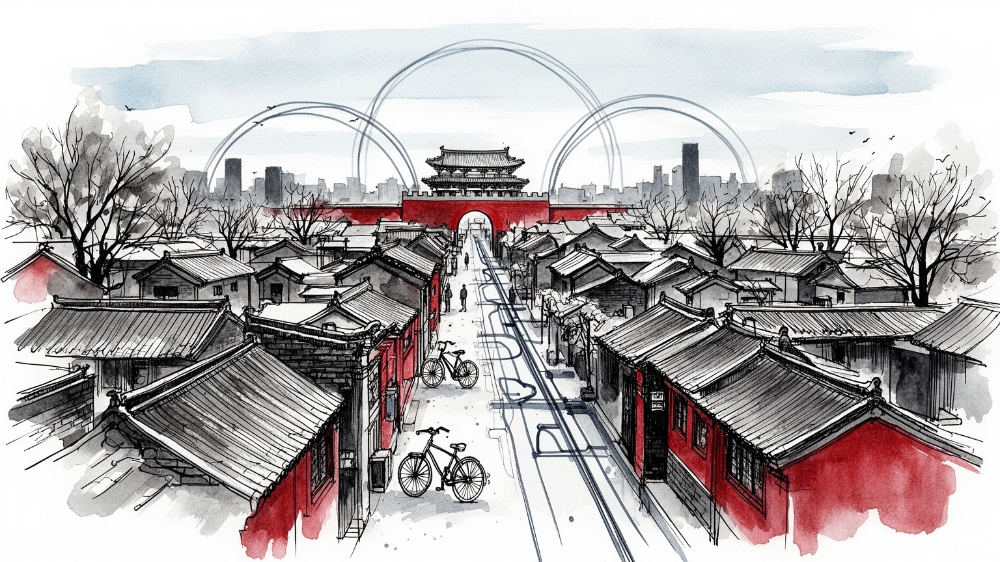
北京は中国の政治中枢で、党、政府、軍、外交、報道、儀礼が集まる首都です。華北平原と北方の山地を背に、国内統治と国際交渉を同時に担い、警備、式典、会議、規制が都市空間に現れます。広場も軸線も政治の装置です。
中央政府、国有企業本部、大学、研究機関、金融、IT、自動車、文化産業が雇用を作ります。その背後で建設、警備、清掃、調理、配送、介護、観光案内、家事労働、出稼ぎ労働が支え、居住資格と家賃が生活を左右します。
故宮、天壇、孔廟、雍和宮、牛街のモスク、教会、廟会が、皇帝儀礼、儒教、仏教、道教、イスラム、民間信仰の記憶を残します。京劇、出版、大学、映画、現代美術も重なり、国家文化と日常の祈りが近くにあります。
観光客は故宮、天安門、天壇、頤和園、長城、胡同、798芸術区を巡りますが、住民には通勤、家賃、教育、医療、大気、渋滞、水不足が毎日の条件です。名所の足元に市場、食堂、地下鉄、団地、警備のある生活が続きます。
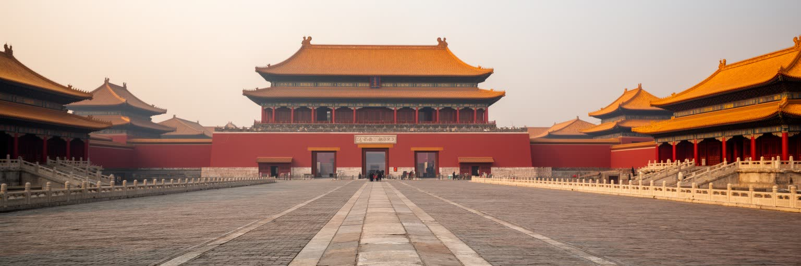
北京の都市構造は、故宮を中心に南北へ伸びる軸線と、華北平原の北端という地形から始まります。紫禁城、天安門、前門、天壇、鼓楼、鐘楼を結ぶ線は、皇帝の儀礼と都市計画を重ねた骨格であり、現在も国家儀礼、観光、警備、日常の移動を方向づけます。西と北には山地が近く、万里の長城は観光名所である前に、北方との境界を意識させる地理的な記憶です。平原側には住宅地、大学、工業地、物流施設が広がり、環状道路が古い城郭都市を何重にも包みます。北京を歩くと、まっすぐな大通り、門、広場、胡同の細い路地、高層ビルが重なり、帝都の秩序と現代都市の速度が衝突して見えます。地形と軸線を読むことは、北京が単なる巨大都市ではなく、権力の中心を空間に刻み続けてきた都市であることを理解する入口です。水路、湖、寺廟、市場も、この軸線を補いながら生活の地図を作ります。さらに首都の位置は、河北、天津、内モンゴル方面との関係にも開かれています。食料、水、建材、通勤、観光、軍事的な想像力は市域の外へ伸び、北京は周辺地域の資源と労働に依存します。だから軸線は中心を示すだけでなく、外部をどう取り込むかを示す線でもあります。古い都城の読み方と広域首都圏の読み方を重ねると、北京の輪郭は初めて立体的になります。門の向きや道路幅にも、その記憶が残ります。
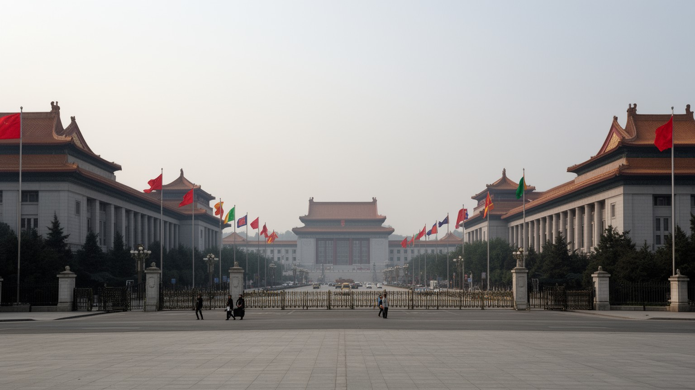
北京は首都であるだけでなく、中国共産党、中央政府、軍、全国人民代表大会、最高人民法院、外交機関、国有企業本部、報道機関が集中する統治の都市です。中南海、人民大会堂、各部委、大使館街、国家級の会議施設は、日々の街路に警備、交通規制、式典、報道、抗議の管理をもたらします。政治の中心は観光名所と近く、天安門広場や長安街は、市民の広場であると同時に国家を演出する舞台でもあります。北京の地政学は、国際空港や高速鉄道だけでなく、国内の省や地方都市が中央へ接続される制度の流れからも生まれます。各地の政策、人事、予算、陳情、企業の投資判断が北京に集まり、首都の会議室から全国へ戻っていきます。都市の力は金融だけで測れません。党と国家の制度が街区、ホテル、官庁食堂、記者会見、警備線、地下鉄駅に埋め込まれ、政治が都市の日常として経験される点に北京の特異性があります。重要会議の時期には宿泊、交通、警備、清掃、報道の仕事が増え、市民の移動も変わります。外交儀礼は空港から迎賓館、人民大会堂、ホテルへ流れ、都市全体が国家の応接室として使われます。その緊張が首都の日常に厚みを与えます。制度が近すぎる都市では、政治の変化が住宅、教育、企業活動、観光にもすぐ波及します。首都の安定は、街路の使い方そのものを大きく変えます。
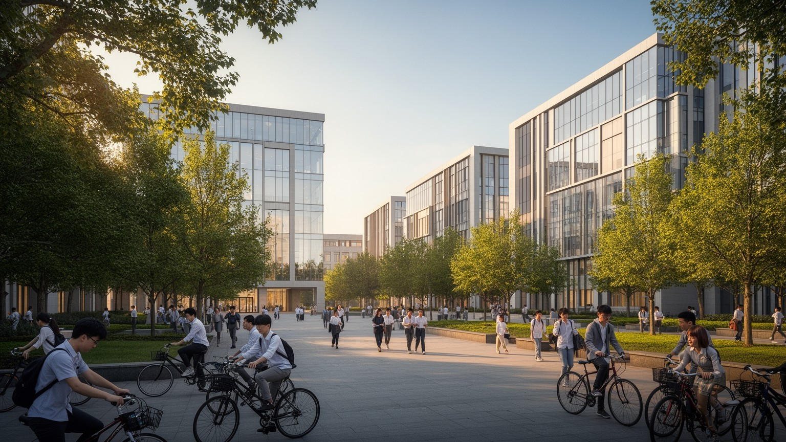
北京の産業は、中央官庁と国有企業だけでは説明できません。清華大学、北京大学、中国科学院、人民大学、語言大学、芸術系の学校が集まる北西部は、人材、研究、出版、留学生、起業を結びつけてきました。中関村は電子市場からIT企業、人工知能、半導体、教育技術、プラットフォーム企業、ベンチャー投資の地区へ変化し、国家の産業政策とも密接に関わります。金融街やCBDには銀行、保険、法律、コンサルティング、外資系企業が集まり、研究成果と政策資金を事業へ変える回路を作ります。大学都市としての北京は、若者を全国から引き寄せますが、競争は厳しく、住宅費、戸籍、就職、学歴格差が人生の選択を左右します。高考に向かう高校生、塾へ急ぐ子ども、進学を支える祖父母も、研究都市の風景です。研究開発の華やかさの裏には、実験補助、警備、清掃、食堂、配送、学生アルバイト、長時間勤務の技術者がいます。北京の技術産業を読むには、国家戦略、大学、企業、若い労働者の生活を同じ地図に置く必要があります。高度人材の集積は都市の競争力を高めますが、若者に長時間労働と高い生活費を強いることもあります。研究室、投資家、官庁、寮、食堂が近いからこそ、技術は政策と日常の間で形を変えます。その近さが競争力であり、学びの重さと生活の圧力を同時に生みます。
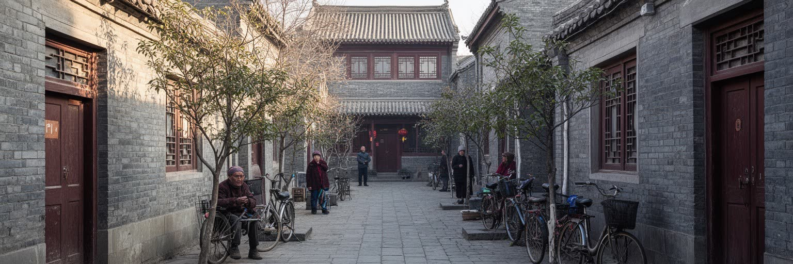
北京の胡同は、観光客にとって古い路地の風景ですが、住民にとっては長く続いた生活の単位です。四合院、共同の門、近所の商店、公共トイレ、小さな食堂、廟、学校への道が、首都の中心に細かな社会関係を作ってきました。朝は豆汁や油条の匂い、自転車のベル、配達員の声が路地に重なり、夕方には高齢者の会話と子どもの帰宅が狭い道を満たします。再開発と保存政策は、老朽化した住宅を改善し、防災や衛生を高める一方、家賃上昇、立ち退き、観光化を通じて元の住民を遠ざけることがあります。胡同をきれいな歴史景観としてだけ見ると、そこで暮らす人の狭さ、暖房、介護、駐車、騒音、トイレ、相続、店舗営業の問題が見えません。北京の住宅は、中心部の古い路地、高層マンション、単位住宅、郊外団地、開発区の社宅、移住労働者の借家が並存します。どこに住めるかは、職場までの距離、戸籍、学校区、収入、家族の支援に左右されます。観光向けに整えられた路地では、カフェや宿泊施設が増え、地域の店が変わることもあります。一方で高齢者の見守り、子どもの通学、朝の買い物、将棋や会話の場は、路地の近さがあって残ります。保存の価値は、住民が日々使える関係にもあります。住宅を読むと、北京の歴史は建築様式ではなく、誰が中心部に残れるかという現在の問題になります。
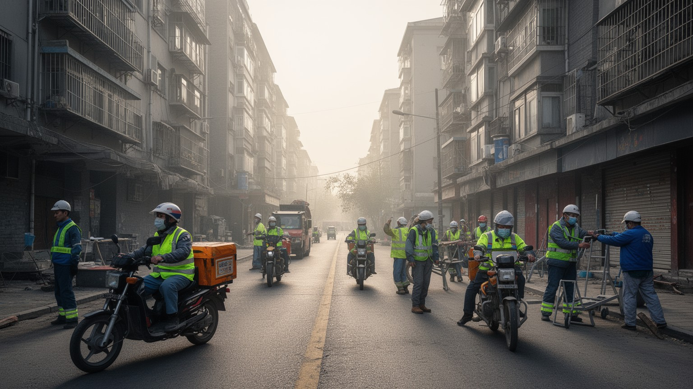
北京の毎日は、地方から来た労働者なしには成り立ちません。建設現場、飲食店、清掃、警備、配送、家事、介護、ホテル、工場、露店、修理、保育補助など、多くの仕事が首都の便利さを支えています。高層ビルや地下鉄が整うほど、荷物を運ぶ人、夜に床を磨く人、厨房で北京ダックや麺を仕込む人、工事の安全を守る人の姿は見えにくくなります。市場の青果、路上の軽食、深夜の小さな飲食店も、規制と需要の間で動く都市経済です。戸籍制度は教育、医療、住宅、社会保障へのアクセスに影響し、働く場所が北京でも、家族の生活基盤が故郷に残ることがあります。子どもの進学、親の介護、住まいの狭さ、賃金の未払い、取り締まり、都市整備による移転は、移住労働者にとって切実な問題です。北京の経済を数字で見るだけでは、こうした労働の時間と不安は見えません。首都が清潔で安全に動くことは、権利の弱い人びとの反復労働に依存しています。出稼ぎの人びとは、春節の帰省、寮生活、郊外の安い住まい、スマートフォン決済、配達アプリを通じて都市と故郷をつなぎます。彼らの移動が止まると、食堂、工事、宅配、観光サービスはすぐに滞ります。労働を見ることは、首都の便利さの条件を見ることです。都市政策が人の流れを管理するとき、その影響は店の営業時間、学校、病院、家族の再会にまで及びます。
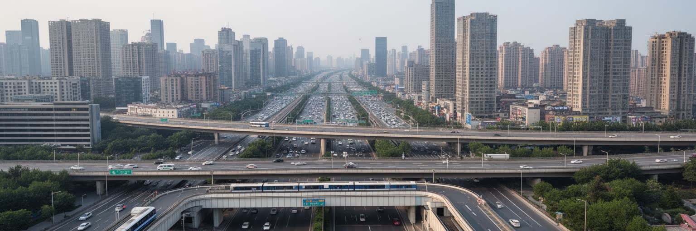
北京の広がりは、二環、三環、四環、五環、六環と呼ばれる環状道路をたどると分かります。古い城壁の内側にあった政治と市場の都市は、環状道路、高速道路、地下鉄、高速鉄道、空港によって、住宅地、大学城、工業団地、物流拠点、行政副中心へ広がりました。通勤者は地下鉄とバスを乗り継ぎ、改札音、車内放送、スマートフォン決済の光の中で長い一日を始めます。貨物は夜の幹線道路を走り、空港と鉄道駅は全国と世界から人と物を受け入れます。環状道路は移動を便利にする一方、渋滞、大気汚染、土地の分断、歩きにくさも生みます。中心に近いほど地価が高く、外へ行くほど通勤時間が長くなるため、住宅の選択は移動時間との交換になります。北京の物流は、官庁や観光地の裏側で食品、建材、通販、展示会の荷物、大学の備品、ホテルのリネンを毎日運びます。都市を支えるのは象徴的な広場だけではなく、配送センター、車庫、整備工場、地下鉄車両基地、道路の管理です。環状道路を読むと、首都の秩序と負担が同じ線上に見えます。副中心や新空港周辺の開発は、北京だけでなく天津、河北を含む広域圏を意識した動きです。移動網の発達は便利さと依存を同時に増やします。道路の外側へ住宅が伸びるほど、通勤は長くなり、公共交通と生活施設の配置が暮らしを左右します。その負担も首都の姿です。
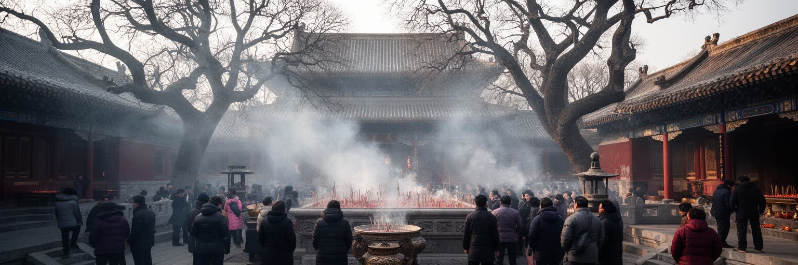
北京の宗教と儀礼は、皇帝が天を祭った天壇、チベット仏教の雍和宮、儒教の孔廟、道教寺院、牛街のモスク、カトリックやプロテスタントの教会、民間信仰の廟会に分かれて現れます。政治首都である北京では、宗教はしばしば管理の対象として語られますが、実際には祈願、墓参、正月の参拝、結婚、葬送、商売の縁起、地域の祭りとして生活の中に残ります。春節には地壇や廟会に家族連れが集まり、屋台の湯気、飴細工、玩具、爆竹の記憶が祝祭の時間を作ります。イスラムの食習慣を支える店、ラマダンの時間、寺院の線香、教会の礼拝、大学の留学生が持ち込む信仰は、首都の多層性を示します。国家儀礼が都市の大通りを使う一方で、日常の祈りは路地、門前町、家族の食卓、墓地、季節行事に宿ります。北京を宗教都市として読むには、壮麗な建築だけでなく、誰がその場所を使い、どのような制限や調整の中で信仰を続けているのかを見る必要があります。天壇の祭祀は国家秩序の記憶を伝え、牛街の食堂や市場は少数民族の生活を支えます。寺院の門前には観光、商売、祈願が混ざり、祝日の混雑は都市の信仰が今も生きていることを示します。宗教を読むことは、北京の多様な住民を読むことでもあります。祈りの場所は、移住者や高齢者が都市の中で自分の時間を保つ拠点にもなります。生活の尊厳も表れます。
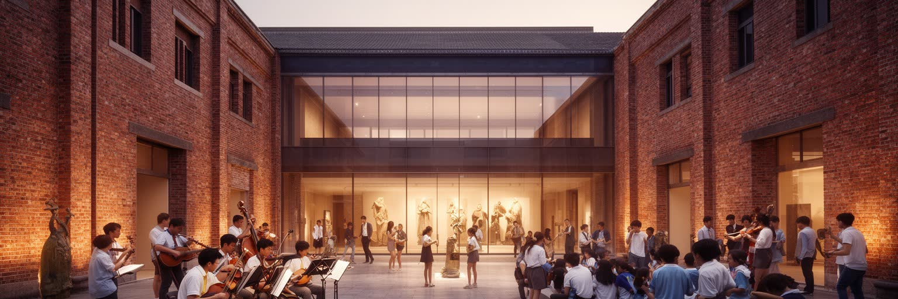
北京は中国の文化、メディア、教育の中心でもあります。中央テレビ、新聞社、出版社、映画学院、音楽院、演劇学校、大学、美術館、劇場、書店、798芸術区が集まり、国家の公式文化と若い表現が近い距離で並びます。京劇や伝統音楽は観光資源であると同時に、訓練、師弟関係、劇場経営、学校教育によって支えられます。映画、配信ドラマ、広告、ゲーム、現代美術、デザインは市場の勢いを持ちますが、検閲、許認可、資金、家賃、政治的な境界にも影響されます。夜のライブハウスや小劇場では、ロック、民謡、実験音楽、トークイベントが若い観客を集めます。北京の学生街や書店街では、国内各地から来た若者が学び、働き、議論し、進路を選びます。文化都市としての北京は、華やかなイベントだけでなく、翻訳者、編集者、舞台技術者、警備、清掃、印刷、配信管理、学生アルバイトの労働に支えられています。芸術区が観光地になると、工房や安い作業場は外へ押し出されることがあります。書店や小劇場、ライブ会場は、都市の思想と感情を受け止める場所ですが、家賃や規制に弱い存在です。北京の文化力は、発信力だけでなく、表現の場をどれだけ残せるかにも表れます。教育の集中は希望を生む一方、進学競争と住居費を高め、文化の入口を狭くすることもあります。そこに都市の厚みがあります。
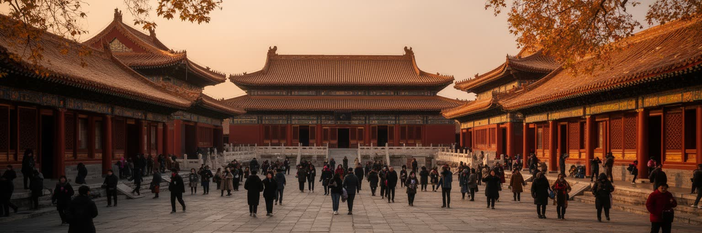
北京観光は、故宮、天安門、天壇、頤和園、明十三陵、万里の長城、胡同、后海、798芸術区、国家大劇院へ人を集めます。これらは中国の歴史を象徴する場所ですが、観光は単に過去を見る行為ではありません。入場管理、警備、修復、土産物、ガイド、交通、ホテル、飲食、写真撮影の動線が、遺産の使われ方を変えています。故宮の赤い壁や天壇の円形の壇は、皇帝権力の記憶であると同時に、現在の国家イメージを支える舞台です。長城への日帰り観光は、北方の境界を体験する旅であり、郊外の村、バス会社、ロープウェー、売店の労働にもつながります。観光客は北京ダック、炸醤麺、火鍋、老舗菓子、夜の軽食を探し、王府井、前門、三里屯、ショッピングモール、市場を歩きます。観光客が増えるほど、歴史地区の住民は混雑、価格上昇、騒音、交通規制を受けます。北京の遺産を守ることは、建物を保存するだけでなく、そこで働く人と暮らす人の生活を守ることでもあります。博物館の予約、地下鉄の混雑、団体旅行の集合場所、夜市の規制は、観光が都市運営そのものと結びつくことを示します。遺産は静かな展示物ではなく、清掃、修理、案内、警備、交通整理があって動く現場です。観光と統治が近い都市では、記憶の見せ方そのものが政治的な意味を持ちます。そこも北京観光の重要な特徴です。
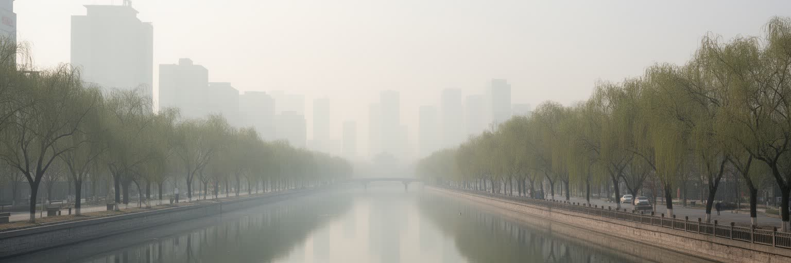
北京の環境を考えるとき、大気と水は避けられません。冬の乾燥、黄砂、暖房、交通、工業地帯、周辺地域の排出は、長く大気汚染の問題を作ってきました。近年は規制、燃料転換、工場移転、公共交通の拡大で改善もありますが、微粒子、オゾン、猛暑、砂塵、渋滞はなお生活の条件です。水も重要です。北京は大河のほとりにある湿潤な都市ではなく、歴史的に水不足と治水に悩んできました。南水北調、地下水管理、節水、湖や運河の再生は、首都を維持するための広域的な仕組みです。五輪遺産の競技場、公園、バスケットボールやサッカーの練習場は屋外生活を広げますが、猛暑や空気の悪い日は運動や登校を制限します。環境問題は抽象的な政策ではなく、子どもの通学、高齢者の呼吸器、屋外労働、観光の快適さ、住宅の冷暖房費に関わります。北京を読むには、巨大な国家首都が、遠くの水源、周辺地域の産業調整、市民の移動方法に依存していることを見る必要があります。気候変動で豪雨と猛暑が強まれば、地下鉄、地下駐車場、古い住宅、低地の道路は新しい備えを求められます。環境政策は青空の日数だけでなく、弱い立場の人が暑さや汚染から守られるかで評価されるべきです。首都の快適さは広域の負担とつながっています。空気と水を読むと、北京の繁栄が市域を越えた資源配分に支えられていることが分かります。環境は都市の限界です。
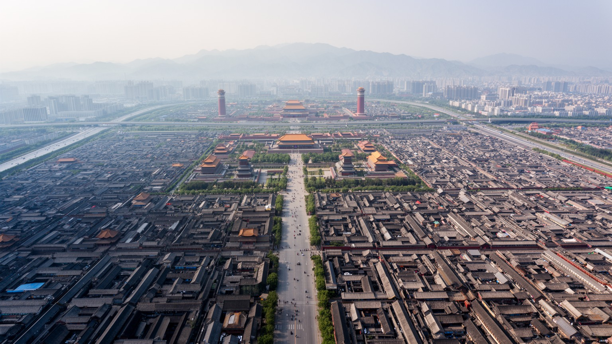
北京を世界都市として読む理由は、GDPや人口だけではありません。皇城の軸線、党国家の中枢、大学と研究機関、IT企業、環状道路、胡同、移住労働、宗教儀礼、観光遺産、大気と水の問題が、同じ都市の中で互いに結びついています。ニューヨークやロンドンのような金融中心とは異なり、北京の核心は、国家を統治する制度と、巨大な生活都市がほぼ同じ場所に重なる点にあります。大通りの広さ、警備の存在、会議の季節、大学の競争、家賃、戸籍、地下鉄の混雑、砂塵、寺院の線香、胡同の食堂を一緒に見ると、首都の力と負担が同時に見えてきます。夜の市場、ライブ会場、五輪公園、学校帰りの子ども、高齢者の太極拳、書店や映画館の列も同じ地図にあります。北京は中国を代表して世界と交渉する都市であり、同時に地方から来た人が働き、学生が学び、高齢者が路地で暮らす都市です。世界都市としての北京の厚みは、権力の象徴だけでなく、その象徴を毎日支える労働、住まい、環境、記憶の層を読めるかにかかっています。世界の中の北京は、外交の舞台であり、技術競争の拠点であり、観光の古都であり、生活費に悩む大都市でもあります。北京を理解することは、中国の国家像だけでなく、巨大都市がどのように記憶、管理、労働、環境を束ねるかを読むことです。その束ね方に現代世界の緊張が映ります。